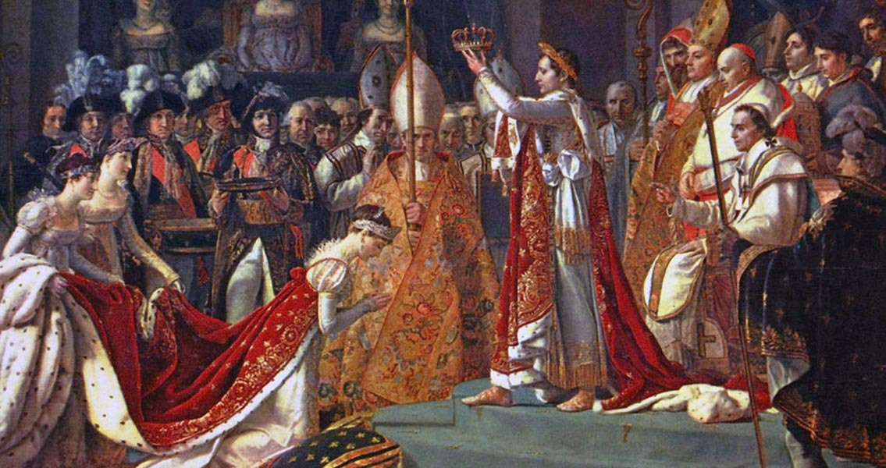
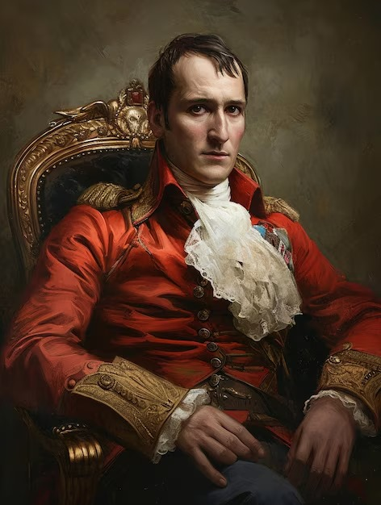
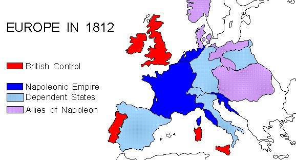

🇬🇧 English
French History
Home
Napoleon
Topics
Napoleon Bonaparte & The Battle of Waterloo
Introduction

Rise to Power

The Napoleonic Wars

The Battle of Waterloo
Exile & Legacy
← Previous: Louis XIV
Next: Colonisation & Decolonisation →